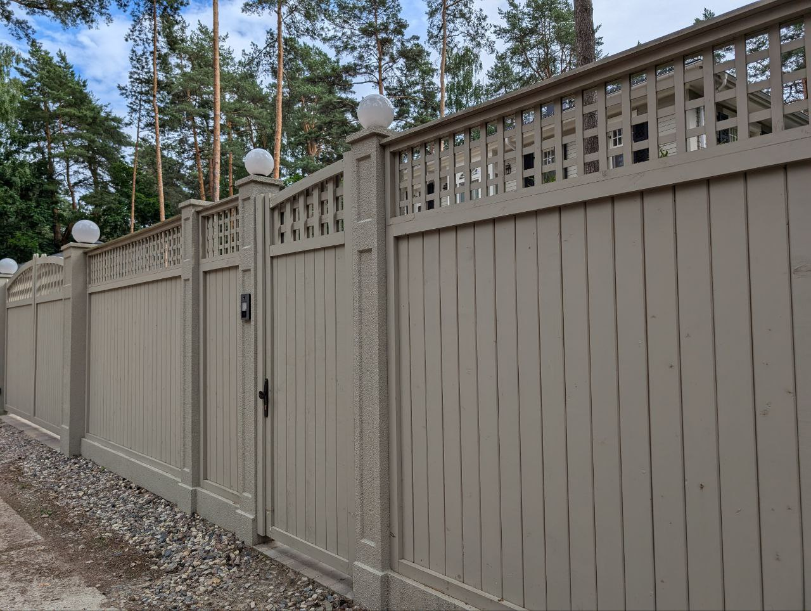
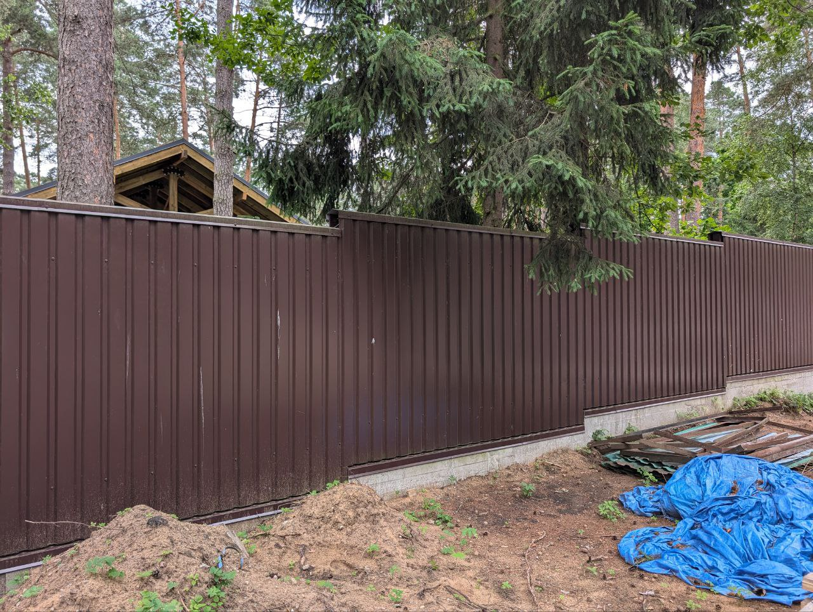
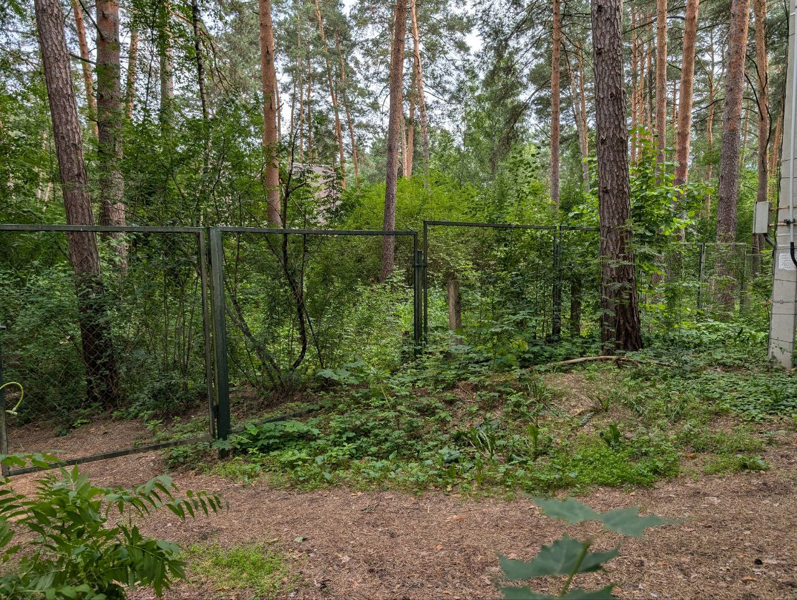
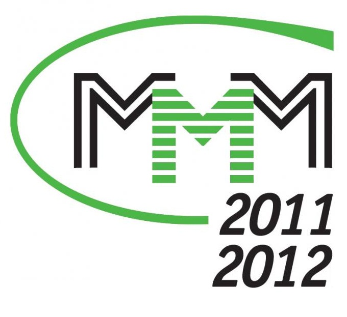
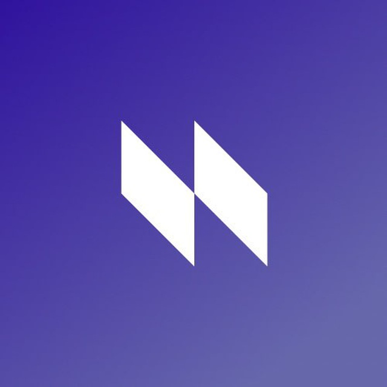
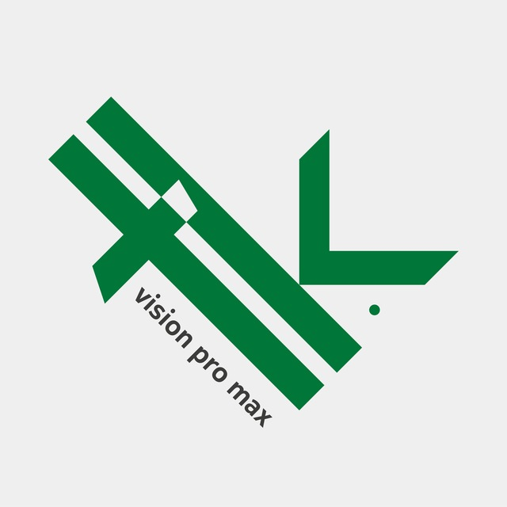
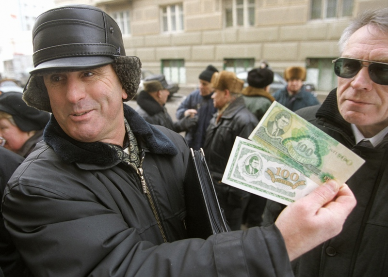
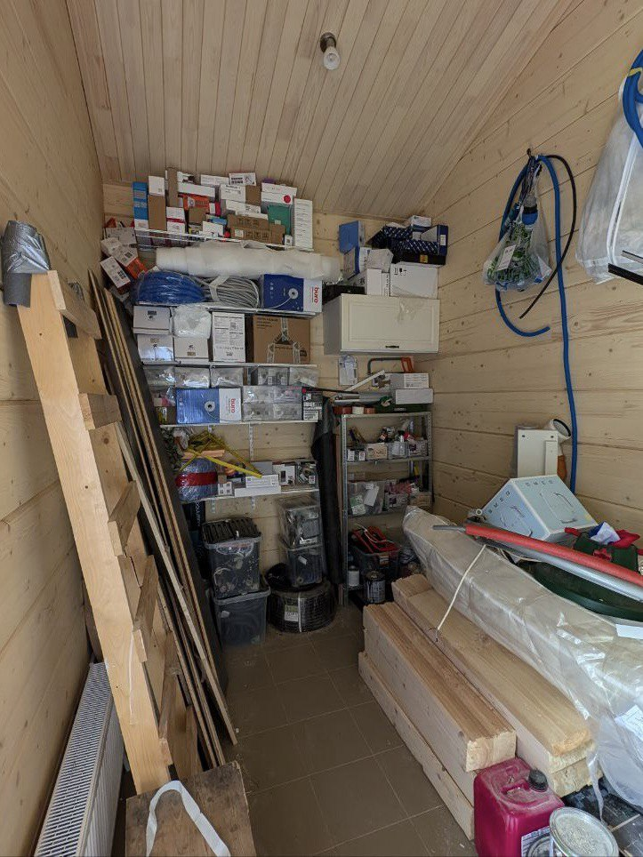
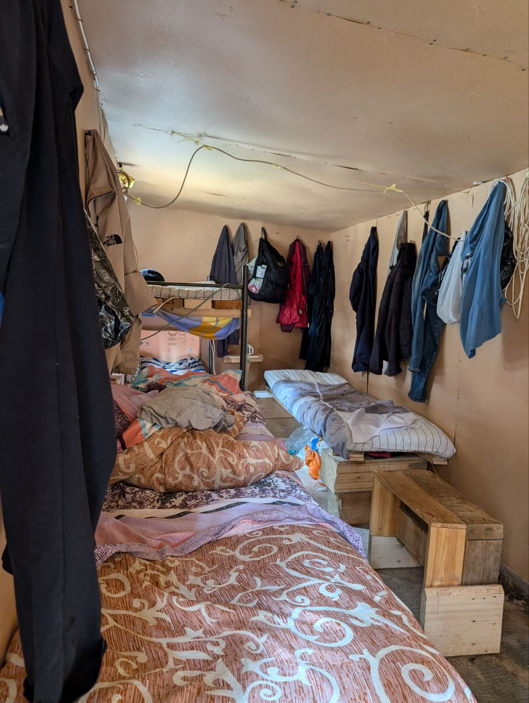
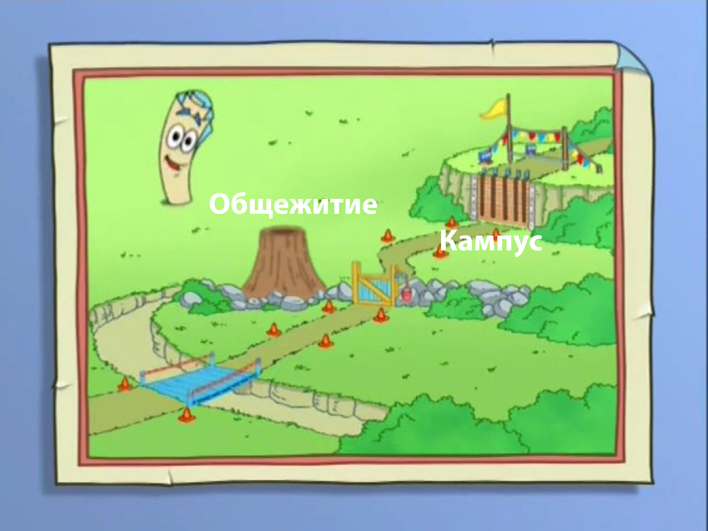

Направления обучения
Работы наших руководителей

Василий Пупкин
Факультет шурупно-гвоздевого
заборостроения
заборостроения

Полиграф Полиграфович
Факультет нанозаборостроения

Борис Джонсон
Факультет сетки Рабица
Университет сильных партнеров
В разработке наших программ участвуют настоящие профессионалы. Они точно знают, какие специалисты нужны
рынку. Партнеры университета:



Стабильная стипендия
Так как преподавательский состав пропил все гранты Заборостроительного Университета, было принято стратегическое решение по поиску новых партнеров. Генеральным финансистом выступила компания МММ: теперь студенты могут получать стипендию в Мавродиках!

Первый студент ЗУ получает стипендию
Кампус и общежитие

Кампус: Деревня Дураков, Малопендюринский Тупик д.7, вход с крыши, через дымоход

Общежитие: Курский вокзал, платформа 1С
Как нас найти?
